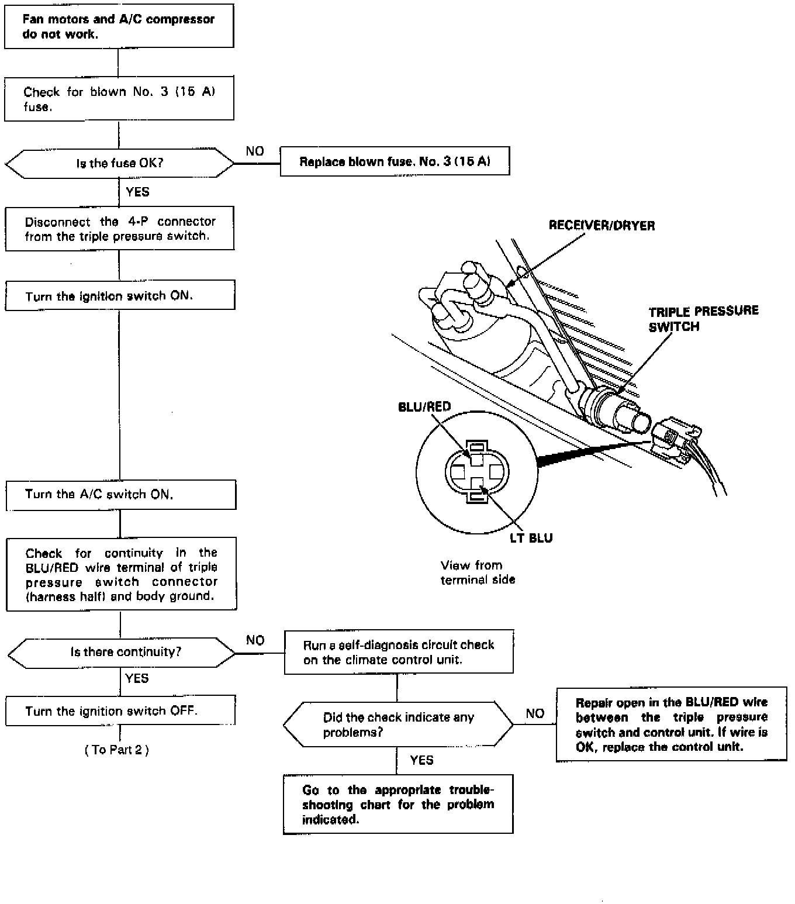
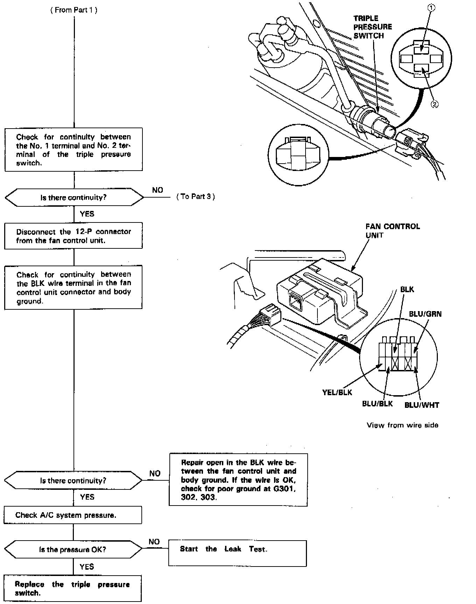
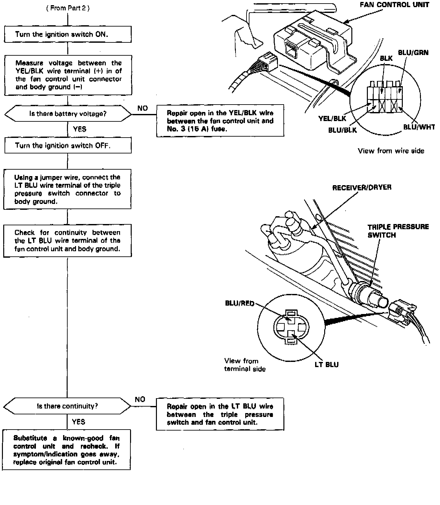

Operation CHARM
: Car repair manuals for everyone.
Home
>>
Acura
>>
1992
>>
Legend Coupe V6-3206cc 3.2L SOHC FI
>>
Repair and Diagnosis
>>
Heating and Air Conditioning
>>
Condenser Fan
>>
Testing and Inspection
>>
Component Tests and General Diagnostics
>>
Non-Trouble Code Procedures
>>
Diagnostic Flowcharts - Automatic Climate Control
>>
Fan Motors and A/C Compressor
Fan Motors and A/C Compressor
Fans And Compressor, Part 1 Of 3:

Fans And Compressor, Part 2 Of 3:

Fans And Compressor, Part 3 Of 3:
